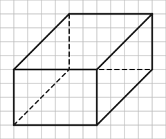

Quader und Würfel beschreiben
Mit einem KI-Tutor lernen
Ein KI-Tutor erklärt dir diese Seite und hilft dir bei den Aufgaben. Wähl deinen Assistenten:
Mit Claude öffnen Mit ChatGPT öffnen Mit Mistral Vibe öffnen
Du nutzt dein eigenes Konto beim Anbieter. Der Assistent ist kein Angebot von lernapps.net: lernapps liefert nur Inhalte und Aufgaben. Die Wahl gilt für alle Seiten, nur auf diesem Gerät.
Eine Schachtel genau ansehen
Wenn du jemandem erklären willst, wie ein Karton aussieht, musst du seine Teile benennen. Nimm einen Schuhkarton in die Hand. Nach dieser Seite kannst du Quader und Würfel beschreiben: mit Flächen, Kanten und Ecken. Mit dem Regler klappst du den Körper auf, mit den Knöpfen drehst du ihn. Seine Flächen sind von 1 bis 6 nummeriert.
Der Körper steht schon in der Ausgangsstellung.
Ein Quader, 4 Einheiten lang, 2 breit und 3 hoch. Er hat sechs Rechtecke als Flächen: je zwei gegenüberliegende sind gleich groß. Er hat zwölf Kanten und acht Ecken.
Aufgabe
Lösung
Rechtecke richtige Antwort
Alle sechs Flächen des Quaders sind Rechtecke. Je zwei gegenüberliegende sind gleich groß.
Dreiecke
Dreiecke haben nur drei Ecken. Die Flächen des Quaders haben vier Ecken und vier rechte Winkel.
Kreise
Ein Kreis hat keine Ecken. An einer Schachtel sind alle Flächen eben und haben gerade Kanten.
Jede Fläche des Quaders hat vier Ecken und vier rechte Winkel. Das ist ein Rechteck.
Flächen, Kanten, Ecken
Wenn du einen Körper beschreiben willst, brauchst du Wörter für seine Teile.
- Quader
Ein Quader ist ein Körper mit sechs Rechtecken als Flächen. Gegenüberliegende Flächen sind gleich groß.
- Würfel
Ein Würfel ist ein Quader, dessen sechs Flächen alle gleich große Quadrate sind.
Der Quader hat sechs Rechtecke als Flächen. Je zwei gegenüberliegende Flächen sind gleich groß. Der Würfel ist ein besonderer Quader: Alle seine Flächen sind gleich große Quadrate und alle Kanten gleich lang.

© CC-BY-4.0Ein Quader. Du zählst sechs Flächen, zwölf Kanten und acht Ecken. Gestrichelt sind die Kanten, die du von vorn nicht siehst.
- Fläche
Eine Fläche ist ein Stück der Oberfläche eines Körpers, eben oder gekrümmt. Beim Quader ist jede Fläche ein Rechteck.
- Kante
Eine Kante ist die Linie, an der zwei Flächen zusammenstoßen.
- Ecke
Eine Ecke ist ein Punkt, an dem Kanten oder Flächen zusammenstoßen.
| Körper | Flächen | Kanten | Ecken |
|---|---|---|---|
| Quader | 6 Rechtecke | 12 | 8 |
| Würfel | 6 Quadrate | 12 | 8 |
Körper aus Würfeln
Stellst du drei Würfel in einer Reihe nebeneinander, entsteht ein langer Körper. Seine Flächen sind Quadrate an den beiden Enden und Rechtecke an den Seiten.
Übung
Aufgabe
Lösung
Ein Schuhkarton richtige Antwort
Ein Schuhkarton hat sechs Rechtecke als Flächen. Das ist ein Quader.
Ein Backstein richtige Antwort
Ein Backstein hat sechs Rechtecke als Flächen und ist ein Quader.
Ein Quadrat im Heft
Ein Quadrat im Heft ist eine ebene Figur. Ein Körper hat Platz in drei Richtungen, ein Quadrat nur in zwei.
Ein Spielwürfel richtige Antwort
Ein Spielwürfel ist ein Würfel, und jeder Würfel ist ein besonderer Quader.
Quader sind alle Körper mit sechs Rechtecken als Flächen. Der Würfel gehört dazu. Eine ebene Figur ist kein Körper.
Aufgabe
Drei Beispielaufgaben, jede mit ihrer Lösung:
Aufgabe Nr. 1
Ein Quader ist 2 cm lang, 11 cm breit und 13 cm hoch. Wie viele seiner Kanten sind 2 cm lang?
Tipp
Der Quader hat drei Richtungen: lang, breit, hoch. Wie viele Kanten laufen in jeder Richtung?
Lösung
- Der Quader hat drei Richtungen. In jeder Richtung laufen vier gleich lange Kanten, also sind vier Kanten 2 cm lang.
Richtige Antwort: 4
Aufgabe Nr. 2
Ein Quader ist 6 cm lang, 9 cm breit und 13 cm hoch. Wie viele seiner Kanten sind 6 cm lang?
Tipp
Der Quader hat drei Richtungen: lang, breit, hoch. Wie viele Kanten laufen in jeder Richtung?
Lösung
- Der Quader hat drei Richtungen. In jeder Richtung laufen vier gleich lange Kanten, also sind vier Kanten 6 cm lang.
Richtige Antwort: 4
Aufgabe Nr. 3
Ein Quader ist 5 cm lang, 7 cm breit und 16 cm hoch. Wie viele seiner Kanten sind 5 cm lang?
Tipp
Der Quader hat drei Richtungen: lang, breit, hoch. Wie viele Kanten laufen in jeder Richtung?
Lösung
- Der Quader hat drei Richtungen. In jeder Richtung laufen vier gleich lange Kanten, also sind vier Kanten 5 cm lang.
Richtige Antwort: 4
Aufgabe
Lösung
Richtige Antwort: 6
Der neue Körper ist ein Quader. Jeder Quader hat sechs Flächen, auch wenn er aus Würfeln zusammengesetzt ist. Die kleinen Flächen, an denen die Würfel kleben, zählen nicht mehr.
Fehler gefunden oder eine Idee für diese App?